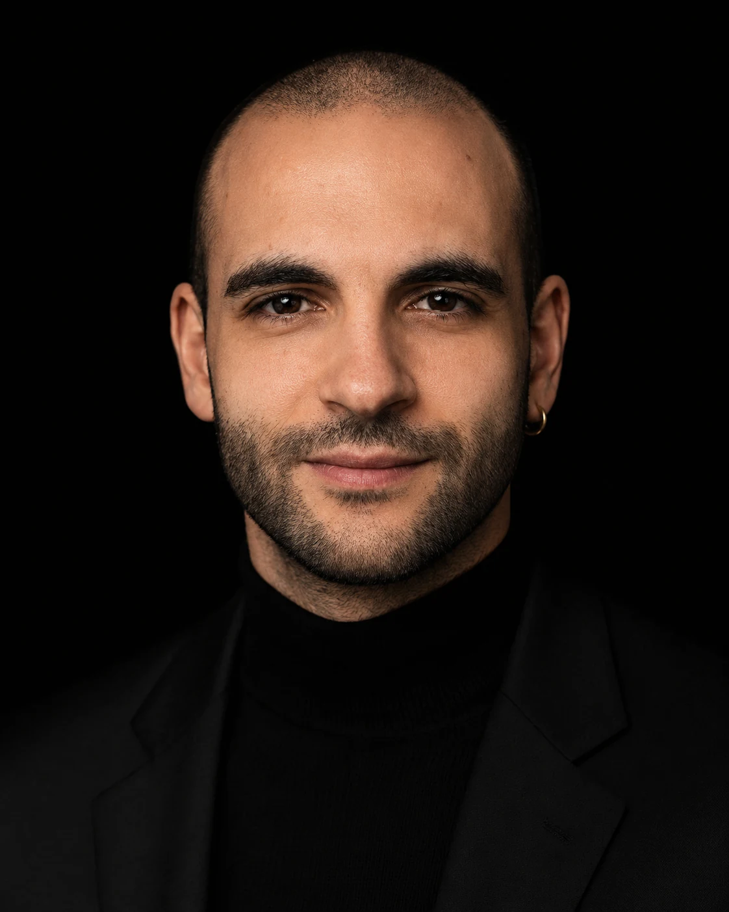

Giacomo Scanavini
This is my personal website
You can learn more about me, my projects, or simply get in touch!
Bio

I spent a long part of my life in particle physics, specifically studying neutrinos. During my master's degree and later as a Ph.D. student I joined multiple collaborations based at the Fermi National Laboratory, including ArgoNeuT , MicroBooNE , SBND , and DUNE. These collaborations leverage Liquid Argon Time Projection Chamber detectors to understand how neutrinos from accelerators and supernovas interact and oscillate
As a postdoc I joined the Shah's Lab to study brain-computer interface applications in humans, specifically in the context of motor-command following and cognitive assessment methods for healthy and cognitively impaired children and adults
More recently, I have been contributing as a machine learning engineer to the development of a medical device for measuring and tracking cognitive capabilities using auditory stimuli
Current and past roles